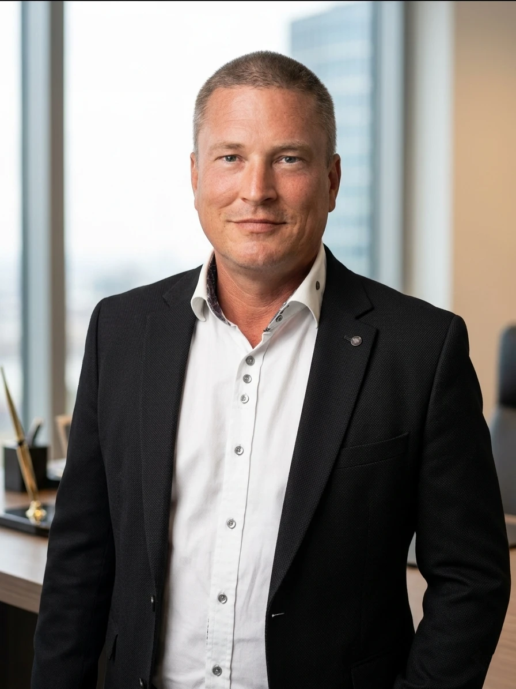

O software para escritórios de advogados que conhece os seus processos — localmente no seu computador, com a IA ao seu lado.
IRONSTICK reúne clientes, processos, provas, prazos, e-mails e documentos nos mesmos autos — e coloca ao seu lado uma IA que conhece esses autos por inteiro. Pergunta, e os autos respondem, com referência a cada documento. Verifica e assina, em vez de procurar e transcrever. Tudo fica cifrado no seu próprio hardware.
1. O dia de trabalho
O dia do escritório num relance
O dia inteiro em três páginas. Abra o IRONSTICK e o dia já está organizado.
Início. Todas as áreas de trabalho e a situação dos seus prazos num relance.
Agenda. Tudo o que entrou nos seus processos, dia a dia — com pré-visualização dos documentos.
Mapa de calor. Cada dia dos últimos doze meses como um quadrado — quanto mais escuro, mais aconteceu nos seus processos; prazos e audiências estão assinalados. Por baixo, os processos em ebulição: os que registaram uma atividade claramente acrescida nos últimos 14 dias.
Monitor de prazos
Números de referência. O número de um documento ou de um lembrete da IA é copiado com um clique — por exemplo, para o colar no chat.
Concluir prazos. Os prazos provenientes de documentos e de registos da cronologia são marcados e removidos em conjunto; os lembretes da IA saem da lista com Eliminar compromisso.
Também a IA define compromissos e prazos — diretamente a partir da conversa consigo. Aparecem na lista com este símbolo.
Nenhum prazo perdido. Um prazo falhado é um caso de responsabilidade profissional. O IRONSTICK reúne todos os prazos e audiências numa única lista e mostra quanto tempo resta.
Todos os prazos e audiências numa única lista — com data, processo e os dias que faltam até ao termo; os vencidos a vermelho, os próximos a laranja.
Prazos a partir da correspondência recebida. A IA reconhece prazos em cartas e decisões recebidas e regista-os.
Sino de prazos. Laranja quando um prazo termina nos próximos dez dias, vermelho no próprio dia — sempre visível na barra de menu.
Imprimir a lista de prazos ou exportá-la em PDF.
Registo automático de documentos
A correspondência recebida trata-se sozinha. Digitalizar, arrastar, confirmar: o IRONSTICK reconhece o texto, atribui o documento ao processo certo e regista o prazo.
Selecionar páginas. Só são incorporadas as páginas que pertencem ao processo.
Reconhecimento de texto integrado. Para mais de 35 línguas europeias, sem nada para instalar.
Sugestão em vez de digitação. A IA sugere cliente, processo, tipo de documento, língua, data e prazo — o utilizador confirma.
Arquivado de forma cifrada e imediatamente pesquisável em texto integral.
Assim, registar um documento demora pouco mais de 20 segundos — e toda a correspondência recebida fica num instante distribuída pelos processos.
2. Da minuta à peça apresentada
Processamento de texto para peças processuais
Editar. A página editável com a barra de ferramentas completa.
Pré-visualização. O documento em páginas A4 individuais, exatamente como serão impressas.
Pré-visualização de impressão. Guarda o documento e abre a pré-visualização de impressão com todos os anexos.
Guardar & fechar. Guarda o documento e regressa à lista de textos.
Peças processuais em minutos, em vez de horas — sem citações inventadas. O seu tempo é a sua faturação, e uma referência errada é o maior risco na utilização de IA. A minuta nasce em diálogo com a IA, diretamente a partir do processo — e cada norma, cada parte e cada elemento de prova são verificados face ao processo e à biblioteca de legislação antes de os ver.
A partir do processo. Dados de base, cronologia, textos integrais, prazos e anexos alimentam a minuta.
Editar e pré-visualizar. Altere o texto e veja de imediato como fica impresso no seu papel timbrado.
Minuta pronta a apresentar. O utilizador revê, finaliza e assina.
Pré-visualização de impressão: peça processual e anexos num só PDF
O seu documento. As páginas da peça processual — um clique esquerdo numa página abre a janela para colocar a sua assinatura.
Linha de título do anexo. Número de registo, número do anexo e título de cada anexo. Por baixo, as respetivas páginas: um clique esquerdo mostra uma página ampliada, um clique direito exclui-a do PDF; um segundo clique direito volta a incluí-la.
Carimbo de autenticação. Pode ser ativado ou desativado para cada anexo; o texto do carimbo segue a língua do país do processo.
DOCX. O documento como ficheiro Word.
Download do PDF. O PDF final com todas as páginas ativas.
A peça está pronta a apresentar. Peça processual e anexos carimbados, paginados e assinados num só PDF — sem passar pela fotocopiadora.
Colocar a assinatura. A sua assinatura guardada é colocada no sítio certo com um clique.
Anexos com carimbo de autenticação. Cada anexo recebe o seu carimbo; páginas individuais podem ser excluídas com um clique.
Exportação em PDF ou DOCX — peça processual e anexos num único ficheiro, paginados página a página.
Também para processos de grande dimensão. 3.000 páginas carimbadas, paginadas e reunidas num único PDF — em menos de 20 minutos.
Dossier de todo o processo
Os autos completos num único documento. O assistente de dossier reúne todo o processo num dossier paginado. Primeiro, decide o que nele entra.
Selecionar documentos. Cada registo da cronologia pode ser incluído ou omitido com um clique.
Até à página individual. De cada documento escolhe exatamente as páginas que pertencem ao dossier.
Ver antes. Documentos, fotografias, transcrições e chats abrem-se na pré-visualização, sem alterar a seleção.
Capa, estrutura e vista de impressão. Em seguida, define a capa e a estrutura e verifica cada página antes de o dossier ser criado.
Capas à escolha. O destinatário é retirado das instituições do processo ou introduzido por si.
Na língua da jurisdição. A capa e os índices são criados na língua do país do processo; se o país tiver várias línguas jurídicas, escolhe a língua.
Estrutura à medida. Capa, índice temático, cronologia, documentos, multimédia, transcrições, chats, índice de pessoas e de instituições — incluir, omitir e ordenar arrastando.
Páginas excluídas imediatamente visíveis. A vista de impressão mostra cada página do dossier final; aí ainda é possível omitir ou recuperar páginas, e o índice temático ajusta os números de página.
Exportação em PDF ou EDRM. Como dossier PDF paginado ou como pacote de produção EDRM com numeração Bates.
3. Compreender o processo
Assistente do processo
O processo de imediato na memória. Antes da audiência ou da reunião com o cliente, pergunta ao processo em vez de folhear — em linguagem natural, por teclado ou por voz.
«Resume o estado atual do processo.» — «Já respondemos à última carta da parte contrária?» — «O que disse a testemunha sobre a inspeção ao local?»
Cada resposta com prova. Cada documento citado é uma ligação clicável para o respetivo registo no seu processo.
As perguntas de rotina ficam no seu computador. Uma camada local responde-lhes sem que quaisquer dados saiam do dispositivo.
Avaliação do processo por IA
Na avaliação geral do processo são tidos em conta os autos completos, incluindo os processos relacionados.
Nas probabilidades de êxito são tidas em conta apenas as peças dirigidas à autoridade e as provenientes da autoridade.
As probabilidades de êxito que pode explicar ao seu cliente. A avaliação do processo por IA lê os autos completos — tanto as suas próprias peças processuais como as peças recebidas da parte contrária — e resume a situação do processo numa apreciação.
Probabilidades de êxito numa escala — com valores individuais para a situação probatória, o pedido principal e os restantes pedidos.
O que joga a seu favor e o que joga contra. Pontos fortes e fracos assinalados a cores, cada afirmação com ligação para o documento em que se baseia.
Próximos passos concretos como recomendação para o seguimento do processo.
Com um clique — sempre de novo, assim que entrem novos documentos no processo.
Rede de pessoas e empresas com pesquisa OSINT
Detetar ligações que ninguém encontraria à mão. Pessoas, empresas, autoridades e tribunais de todos os seus processos formam uma rede comum — como lista, como universo 3D, como mapa 2D e no mapa geográfico. Uma mais-valia sobretudo no direito comercial, da insolvência e penal.
Ligações com prova. Quem aparece em que processos, como os intervenientes estão ligados entre si — e porquê.
Três vistas. O universo 3D para sobrevoar, o mapa 2D dos agrupamentos e o mapa geográfico com todos os intervenientes e locais.
O seu processo e a pesquisa OSINT da IA trabalham em conjunto. A IA cruza o que os seus processos sabem sobre uma pessoa ou empresa com o que as fontes públicas revelam. Cada pesquisa transforma-se em conhecimento duradouro sobre os intervenientes — cresce com cada processo e fica à sua disposição em todos eles.
Pesquisa OSINT pela IA. Indica à IA uma pessoa ou empresa — ela pesquisa primeiro nos seus próprios processos e depois na Internet: percurso profissional, perfis nas redes sociais, imprensa, participações em empresas, registo comercial.
A pesquisa transforma-se em dados de base. A IA cria novas pessoas, empresas e relações, com indicação da fonte, como proposta; só é incorporado o que o utilizador aprovar.
Análise de decisões. Cada decisão judicial nos seus processos pode ser analisada segundo uma grelha fixa — argumentos, direito, provas, fundamentação; antes de redigir uma peça dirigida a esse tribunal, a IA lê também essas análises.
4. Segurança e funcionamento
Sigilo profissional
O sigilo profissional fica no escritório. Nenhum dado de clientes em centros de dados alheios: processo, provas e documentos ficam no seu próprio hardware, em conformidade com o RGPD.
Cifrado com AES-256. A base de dados e os documentos estão cifrados no disco.
Acesso com código de autenticação. Os seus dados só aparecem depois de introduzido o código de seis dígitos do seu telemóvel.
Nenhum dado de clientes enviado ao fornecedor. A IA externa funciona com a sua própria chave; as chamadas são pseudonimizadas.
Funciona também offline. Processo, pesquisa, documentos e o assistente local funcionam sem Internet.
IRONSTICK SERVER
Trabalhar em conjunto — sem nuvem. O IRONSTICK SERVER liga os seus postos de trabalho através de um NAS Synology na sua própria rede — sem nuvem.
Partilhar processos. Com todos os utilizadores ou apenas com colegas específicos — cada partilha pode ser revogada a qualquer momento.
Transferir um processo. Um processo passa integralmente para um colega com poucos cliques.
Cifrado no NAS. Os processos partilhados ficam cifrados com AES-256 no servidor do seu escritório.
Cada um mantém os seus autos. Os autos completos continuam também em cada posto de trabalho.
Biblioteca de legislação comum e uma rede comum de pessoas e empresas.
Cópia de segurança
Todo o seu escritório guardado num único ficheiro. Um clique em «Criar cópia de segurança», e a base de dados e os documentos ficam num ficheiro de cópia de segurança cifrado.
Guarde onde quiser: localmente, num SSD externo ou numa pen USB.
Com o IRONSTICK SERVER, a cópia de segurança fica adicionalmente cifrada no NAS do seu escritório.
Últimas cópias de segurança num relance — com data e tamanho.
Restaurar a partir de um ficheiro de cópia de segurança com poucos cliques.
Sem esforço de informática — experimente 30 dias gratuitamente. O IRONSTICK funciona num PC Windows comum; as atualizações são simplesmente instaladas por cima, e todos os dados são mantidos. Descarregue o software na página de download; o Início rápido guia-o em seis passos desde a instalação até aos seus primeiros clientes.
6–8 núcleos — o reconhecimento de texto processa várias páginas
em paralelo, e o reconhecimento de voz offline beneficia diretamente de cada
núcleo
Memória
8 GB RAM
16 GB RAM — margem
confortável para PDFs grandes, criação de dossiers e transcrição de áudio
em simultâneo
Armazenamento
SSD com 20 GB livres
SSD NVMe com 100+ GB
livres — o arquivo de processos, a pesquisa em texto integral e a geração de PDF exigem muito do disco;
um SSD rápido faz uma diferença notória
Ecrã
1920 × 1080
1920 × 1200 ou mais — os
ecrãs dos processos aproveitam generosamente o espaço vertical
Gráficos
Não é necessária placa gráfica dedicada —
qualquer gráfica integrada é suficiente
Conectividade
Internet apenas para IA externa,
atualizações legislativas, e-mail, pesquisa na web, mapas e geocodificação de moradas — processo, pesquisa, documentos e o assistente
local funcionam totalmente offline; uma porta USB livre para a
sincronização com o tablet
Guardar os dados numa unidade externa (opcional)
Critério
Requisito
Espaço livre
Pelo menos 9 GB, ou 1 GB mais do que o
volume de dados atual
Escrita / Leitura
Pelo menos 80 MB/s / 150 MB/s —
também sob carga contínua (não abaixo de 60 % do valor inicial)
Muitos ficheiros pequenos
Pelo menos 250 ficheiros por
segundo
Sistema de ficheiros
NTFS ou exFAT, não FAT32; sem
proteção contra escrita nem bloqueio
Fiabilidade
Os dados de teste têm de ser relidos sem
alterações
Não admitido
Unidades de rede e pastas de sincronização na nuvem (OneDrive,
Google Drive, Dropbox, iCloud, Box, pCloud, MEGA)
Recomendação
SSD externo — as pens USB comuns raramente atingem
estes valores
IRONSTICK SERVER (opcional)
Requisito
Dispositivo
Qualquer NAS Synology com DSM 7.0 ou superior — ARM ou
Intel; o pacote inclui binários nativos para ARMv7, ARM64 e
x86-64
Desempenho
Concebido de forma deliberadamente leve: verificado
no modelo de entrada DS214se com CPU ARM de núcleo único e
256 MB RAM; funciona em qualquer modelo Synology com DSM 7.0 ou superior, e
os modelos atuais oferecem reservas bem maiores
Memória / CPU
Sem requisitos específicos para além do próprio NAS
— o servidor não realiza trabalho de análise; as suas tarefas em segundo plano
limitam-se a encaminhar pacotes e a uma limpeza
noturna
Espaço em disco
Algumas centenas de MB para o pacote e a
biblioteca de legislação; os pacotes de processos partilhados crescem apenas com o que
efetivamente partilha
Rede
Apenas a LAN do escritório; uma porta TCP (47712) com autenticação por token.
O DSM, a Web Station e as
portas 80/443 não são afetados
Administração
Qualquer browser na LAN; palavra-passe de
administrador própria; chave de licença introduzida uma única vez
Contacto
Tobias Werren

Leia o código para guardar o nosso cartão de contacto — telefone, e-mail e website.
Contacte-nos diretamente por WhatsApp ou Telegram — uma chamada também é bem-vinda. Línguas faladas: alemão, inglês, romeno.